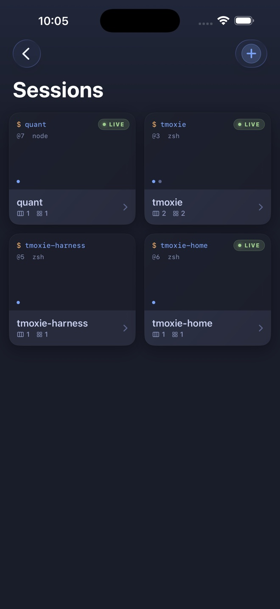

Sessions
See every running tmux session.
Live session cards make tmux workspaces readable before you open them.

tmoxie is an iPhone SSH client for tmux sessions, remote coding agents, and web app previews.
tmoxie connects directly to your machine with your SSH username and password. Your shell, tmux layout, and agent work stay where they already run. Start with the SSH and tmux setup guide, or read about optional Herdr TUI workspaces.
Built for real terminal work
Live session cards make tmux workspaces readable before you open them.

Edit a draft, dictate, attach a file, or paste a clipboard image before sending it to the active terminal agent.

Move between windows and panes without flattening your remote workflow into one shell.

Tunnel a remote localhost service through SSH. Each tmux window remembers its own preview address.
Saved passwords use device-only Apple Keychain protection. Terminal traffic goes directly to the SSH host you choose.
tmux keeps the process alive on your machine. tmoxie gives you a focused way back into the same windows, panes, output, and agent conversation.
Learn the handoff
The tutorial starts with one reachable SSH host. Install tmux and your coding agents on that machine. Optional Herdr integration requires Herdr there too.
Save a host, verify its fingerprint, and open a real shell.
Attach to an existing tmux session and return to the window you last used.
Use the composer, shortcut bar, image upload, and Web Preview together.
Basic SSH includes one saved host and one tmux target. Premium adds more connections, attachments, custom shortcuts, Herdr, and HTTP Web Preview.
$29.99 USD, once
Seven-day Premium trial. No automatic charge. Regional pricing appears in the app.
Compare Free and PremiumSet up one host, keep work in tmux, and carry the session with you.